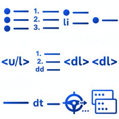

箇条書き

- プロンプト例
HTMLの箇条書きを解説して
HTMLの箇条書き（リスト）
1. 箇条書きの基本種類
HTMLには主に 3種類のリスト があります。
| 種類 | タグ | 用途 |
|---|---|---|
| 箇条書き（黒点） | <ul> | 順番が不要なリスト |
| 番号付きリスト | <ol> | 順番が重要なリスト |
| 定義リスト | <dl> | 用語と説明のセット |
2. 箇条書き（黒丸）リスト
cul = unordered list（順序なしリスト）
<ul> <li>りんご</li> <li>みかん</li> <li>バナナ</li> </ul>
表示例
- りんご
- みかん
- バナナ
ポイント
- <ul> の中に
- を書く
- <li> = list item（項目）
3. 番号付きリスト
ol = ordered list（順序ありリスト）
<ol> <li>HTMLを書く</li> <li>CSSでデザイン</li> <li>公開する</li> </ol>
表示例
- HTMLを書く
- CSSでデザイン
- 公開する
4. 定義リスト
- dl（description list）
用語と説明をセットで書く
- リスト全体に対する dl要素：description list
- 名称(リスト項目)に対する dt要素：description term
- 説明文(リスト内容)に対する dd要素：description details
<dl> <dt>HTML</dt> <dd>Webページの構造を作る言語</dd> <dt>CSS</dt> <dd>デザインを指定する言語</dd> </dl>
5. 箇条書きのネスト（入れ子）
<ul> <li>フルーツ <ul> <li>りんご</li> <li>みかん</li> </ul> </li> <li>野菜</li> </ul>
表示例
- フルーツ
- りんご
- みかん
- 野菜
以下のような場合にも、利用されます。
いわゆる日付で明示する更新情報の場合です。
<dl> <dt>12月12日</dt> <dd>定義型リストと表組みの練習</dd> <dt>12月10日</dt> <dd>HTMLの基本構造の入力練習</dd> <dt>12月07日</dt> <dd>Webサイト制作科開講</dd> </dl>
6. 箇条書きのデザイン変更（CSS）
● を変更する
ul { list-style-type: square; }
| 値 | 表示 |
|---|---|
| disc | ●（標準） |
| circle | ○ |
| square | ■ |
| none | 非表示 |
番号の種類を変更
ol { list-style-type: upper-roman; }
| 値 | 表示 |
|---|---|
| decimal | 1,2,3 |
| lower-alpha | a,b,c |
| upper-alpha | A,B,C |
| lower-roman | i,ii,iii |
| upper-roman | I,II,III |
7. 実務でよく使う例（ナビゲーション）
【html】
<ul class="menu"> <li>Home</li> <li>About</li> <li>Contact</li> </ul>
【css】
.menu { list-style: none; display: flex; gap: 20px; }
👉️ 横並びのメニューが作れます。
まとめ
| 目的 | タグ |
|---|---|
| 普通の箇条書き | <ul><li> |
| 番号付き | <ol><li> |
| 用語説明 | <dl><dt><dd> |